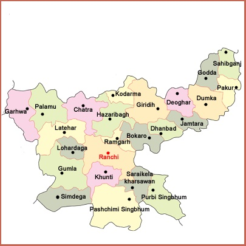

LET'S HAVE A LOOK AT THE TOUR MAP
BACK

WHERE TO VISIT , WHAT TO SEE?
SOME HOT PICKS(#HAVE_TO_VISIT)
- RANCHI - MAJESTIC WATERFALLS, TALL TREES, MAHINDRA SINGH DHONI'S HOUSE
- DEOGHAR - ONE OF THE 12 JYOTIRLINGAS KNOWN AS TEMPLE BAIDYANATH
- JAMSHEDPUR - AESTHETIC INFRASTRUCTURE AND LANDSCAPE
- HAZARIBAGH - DENSE FORESTS AND NATURAL FORMATIONS ,ROCKS AND LAKES
- NETARHAT - QUEEN OF CHOTANAGPUR PLATEAU, SUNRISE AND SUNSET POINTS
- DHANBAD - FORESTS AND HILLROCKS
- BETLA NATIONAL PARK - STUNNING TO FORTS INSIDE THE PREMISES
- DASHAM FALLS - SPECTACULAR WATERFALL FROMA TRIBUTARY OF SUBARNAREKHA RIVER
- SHIKHARJI - PARASNATH HILLS
SOME_OTHER_ATTRACTIONS
- BOKARO - STEEL CITY WITH LAKES AND GREENARY
- GHATSILA - PLACE WHERE KOLKATA CULTURE MEETS JHARKHAND